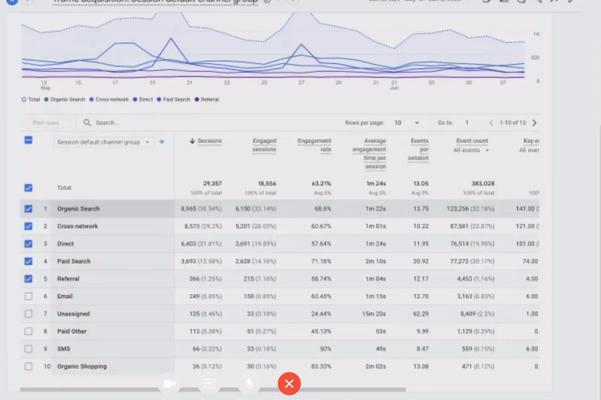

Miele Ukraine — a pre-redesign UX audit.
A structured audit of shop.miele.ua before a planned B2C portal redesign. Nielsen 10 heuristics, competitor benchmark across Bosch, Siemens, AEG, Gaggenau and Smeg, RICE-prioritised recommendations — packaged as a Notion deliverable the client could act on directly.

A premium brand planning a redesign.
Miele Ukraine is the local distributor of a German premium home-appliance brand. They were planning a B2C portal migration and redesign, and wanted an outside expert read on what was actually broken before scoping the project.
The client’s target audience is upper-middle income — people who already trust the brand and expect the digital experience to match. The pre-redesign hypothesis: conversion and trust were being eroded by specific surfaces, but it wasn’t clear which ones, in what order, with what return.
Heuristics, competitors, technical, RICE.
- Heuristic evaluationNielsen 10 usability heuristics applied to four critical surfaces.
- Competitor benchmarkBosch, Siemens, AEG, Gaggenau, Smeg — premium-segment patterns for product, search and checkout.
- Technical auditLoading performance, responsiveness, UI correctness across breakpoints.
- RICE prioritisationReach × Impact × Confidence / Effort — a defensible ranking the client could share with stakeholders.
Four surfaces, ranked by impact.
- Checkout — criticalComplex and opaque flow, redundant fields, weak validation. Direct hit on conversion and trust.
- Homepage — highMissing appliance-category block above the fold. Users couldn’t orient quickly. First-screen order needed revisiting.
- Search flow — highAuto-complete and filter gaps that frustrated intent-driven shoppers — the most valuable segment.
- Product page — mediumCompeting CTAs creating decision friction. Cognitive load at the moment of choice.
A roadmap the client could act on directly.
- Redesign checkout end-to-endFewer steps, linked actions, proper feedback.
- Add a category block on the homepageUpdate first-screen IA to help users orient in < 3 seconds.
- Fix search auto-complete and filtersCritical for users who arrive with intent.
- Resolve CTA competition on product pagesA single primary action, supporting actions de-emphasised.
- A/B test the critical changesMeasure impact on conversion before extending the redesign further.
A clear redesign scope, scoped by impact.
The deliverable was a Notion document the client could navigate: surface-by-surface findings, ranked recommendations, and a starting point for whoever they hired to execute the redesign.
If you liked this, also see…
Found this through Upwork?
Then you already know where to reach me. Send the brief through your Upwork job post or an invite — I usually reply within a working day.